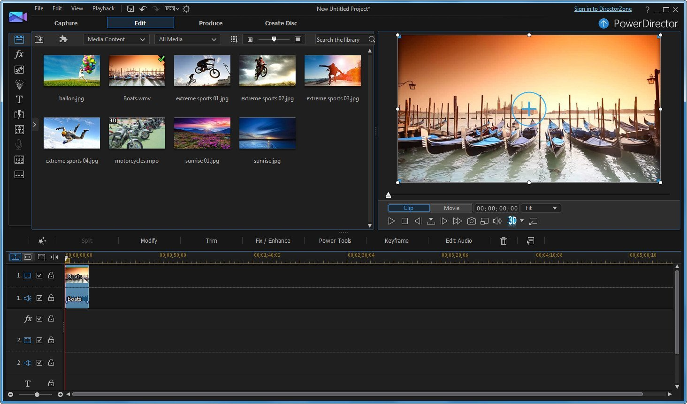

_____________________________________________________________________________________________________________
ВидеоМОНТАЖ — программа, разработанная для качественного монтажа видео, с которым справится даже новичок.
Редактор видео позволяет работать с самыми популярными форматами AVI, MP4, MOV, MKV и многими другими. В проект можно добавлять не только видеозаписи, но и фотографии, картинки, аудио.
«ВидеоМОНТАЖ» поддерживает работу с текстом – вы сможете накладывать надписи, а также создавать титры и заставки. В каталоге футажей вы найдете коллекцию роликов, которые можно использовать для перебивок. Помимо стандартного набора опций для редактирования, здесь есть красочные спецэффекты, возможность добавлять заставки и плавные переходы, опция хромакея и встроенная студия работы со звуком.
Программа включает все необходимые функции для качественной обработки видеоряда – обрезка, кадрирование, коррекция цвета, стабилизация. Встроенный каталог содержит десятки выразительных переходов, которые объединят фрагменты в цельный фильм. Дополнительно редактор видео предлагает обширную коллекцию эффектов, которые всего за один клик украсят ваш проект. При желании вы сможете создать уникальный стиль обработки своими руками.
Логотип ВидеоМОНТАЖ

Меню программы ВидеоМОНТАЖ
Главные преимущества ВидеоМОНТАЖ:
Главные недостатки ВидеоМОНТАЖ:
A подробное описание данной программы и как ею пользоваться можно посмотреть в видео ниже:
Как пользоваться программой ВидеоМОНТАЖ